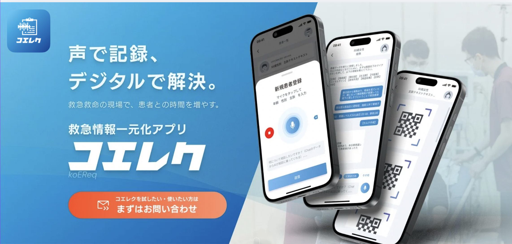

PROPOSAL
提案資料
厚生労働省 令和8年度
業務効率化ICT補助金 活用のご提案
業務効率化ICT補助金 活用のご提案
コエレク導入および
研修プログラムについて
研修プログラムについて
Wonder Drill 株式会社
2026年3月
厚生労働省の要件（令和8年度）
補助対象は 「ICT機器の導入」と「それに附随する訓練（研修）」のセット に限られます。研修単体・ICT機器のみでは申請不可。
出典：医政発0213第22号（令和8年2月13日）
| 項目 | 単価 | 金額（×3） |
|---|---|---|
| アカウント年間使用料 | 180,000円 | 540,000円 |
| 初期登録料 | 30,000円 | 90,000円 |
| おまとめBox（周辺機器一式） | 99,800円 | 299,400円 |
| 初期登録料（サービス割引） | −10,000円 | −30,000円 |
| 初年度 コエレク小計（3アカウント） | 899,400円 | |
| 研修名 | 内容 | 金額 |
|---|---|---|
| コエレク導入研修 | 操作・設定・カスタマイズ | 150,000円 |
| AI基本研修 | AI活用の基礎・実践 | 150,000円 |
| DX研修 | 院内DX推進・計画策定 | 150,000円 |
| 研修3本 合計（人数制限なし） | 450,000円 | |
| 項目 | 初年度 | 2年目 | 3年目 | 3年合計 |
|---|---|---|---|---|
| アカウント年間使用料（×3） | 540,000 | 540,000 | 540,000 | 1,620,000円 |
| 初期登録料（正味・×3） | 60,000 | — | — | 60,000円 |
| おまとめBox（周辺機器一式・×3） | 299,400 | — | — | 299,400円 |
| コエレク導入研修（現地・初年度のみ） | 150,000 | — | — | 150,000円 |
| AI基本研修（現地・年1回） | 150,000 | 150,000 | 150,000 | 450,000円 |
| DX研修（現地・年1回） | 150,000 | 150,000 | 150,000 | 450,000円 |
| 推奨オプション：年間レポート・評価表作成サポート | 100,000 | 100,000 | 100,000 | 300,000円 |
| 3年間 合計（税別） | 1,449,400円 | 940,000円 | 940,000円 | 3,329,400円 |